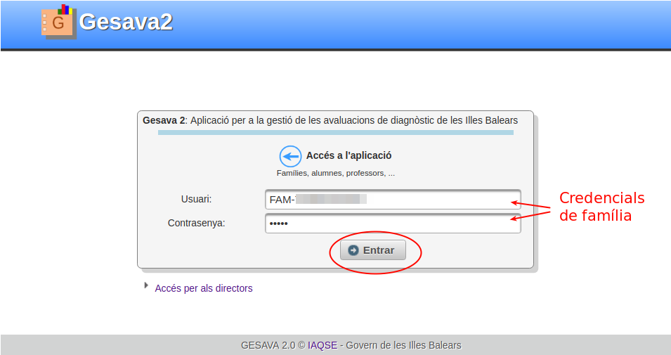
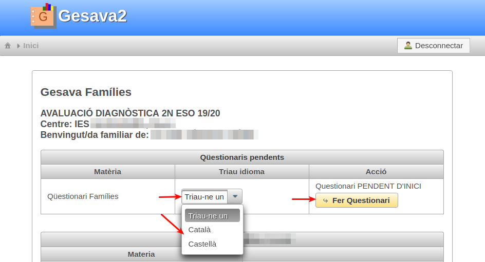
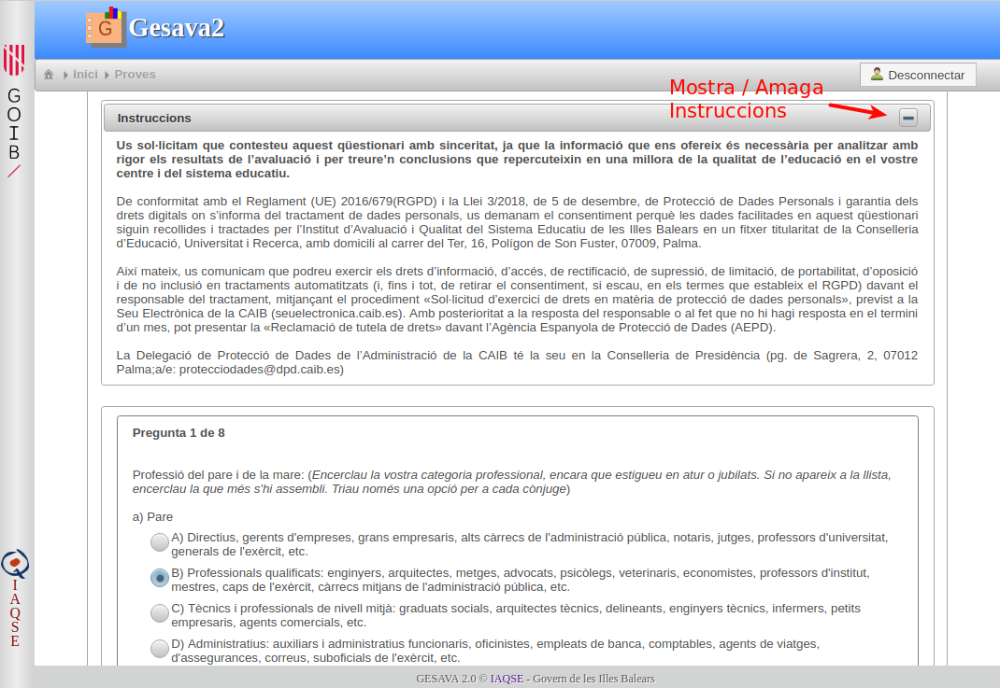
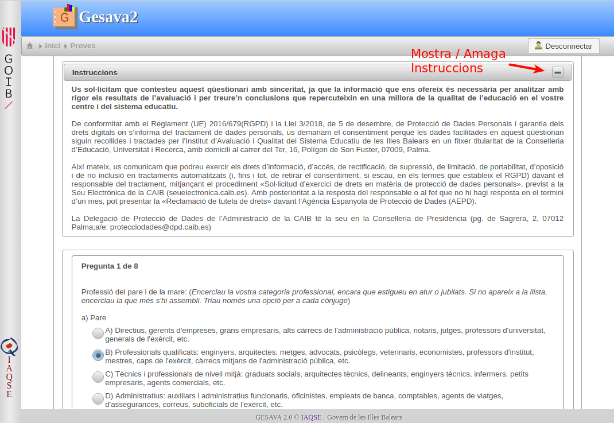
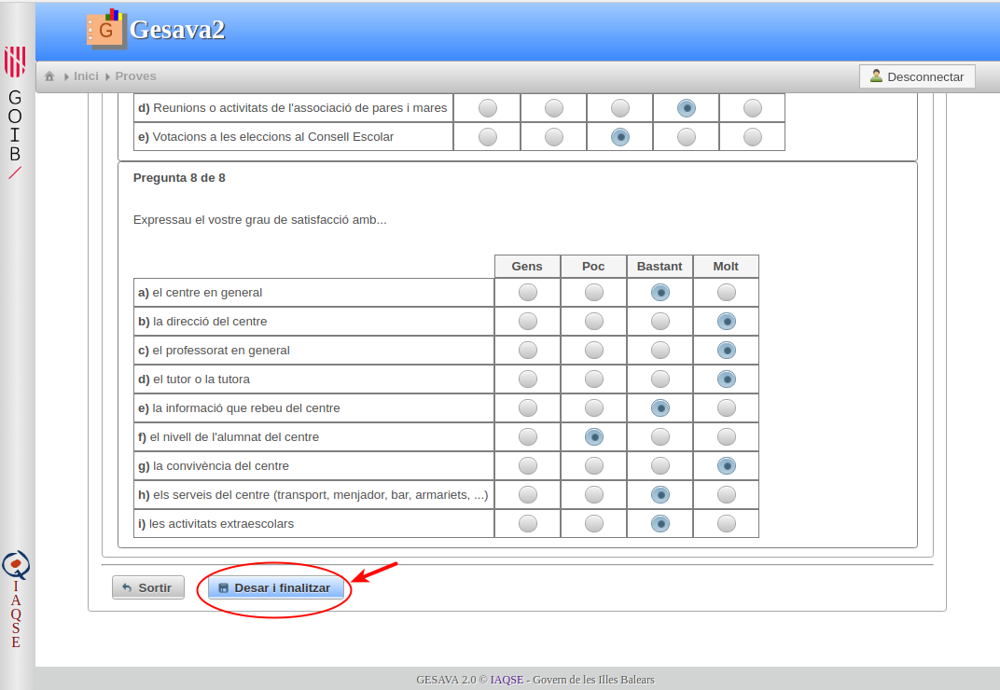
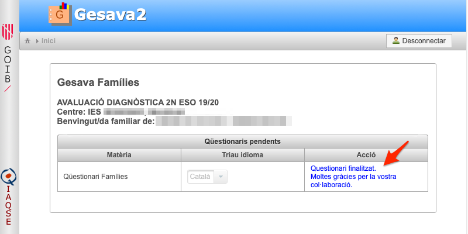
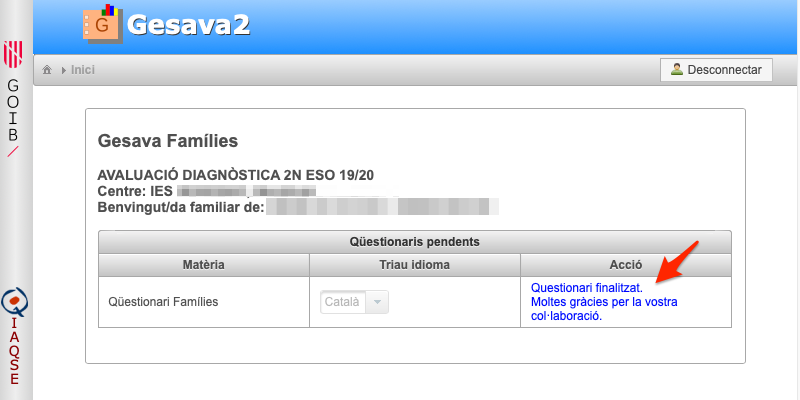

Gesava2 Famílies
Gesava2 - Famílies
Índex de continguts
1. Accés a l'aplicació
Per accedir a l'aplicació seguiu les següents passes:
-
Cliqueu sobre la imatge "Accés GESAVA"
 de la part superior dreta d'aquesta pantalla.
de la part superior dreta d'aquesta pantalla. Us apareixerà la pàgina d'accés a l'aplicació en la qual heu d'introduir l'usuari i contrasenya que us ha proporcionat el vostre centre. El vostre usuari comença amb les lletres FAM-. Aneu en compte d'escriure exactament els camps, respectant majúscules minúscules i sense deixar espais en blanc.
Molt Important! Recordeu a tancar la sessió pitjant sobre el botó "Desconnecta" quan hagueu acabat.

2. Realitzar el qüestionari
Per realitzar el qüestionari de família heu de:
-
Triar l'idioma en què voleu fer el qüestionari (català / castellà) del menú desplegable.
 Clicar sobre el botó "Fer qüestionari"
Important!
El qüestionari s'ha de fer d'una sola vegada. Assegureu-vos que teniu temps suficient per realitzar-lo.
Teniu en compte que si deixau la sessió inactiva durant un temps prolongat, es tancarà automàticament i, si havíeu deixat un qüestionari a mig fer, es perdran les respostes introduïdes.
A la següent pantalla s'obrirà el qüestionari. A la part superior trobareu les instruccions que podreu amagar/desplegar mitjançant el botó
 /
/
 
Fixeu-vos que hi ha preguntes que contenen diferents apartats. En tal cas, heu de contestar cadascun d'ells.
Aneu desplaçant la pàgina verticalment per contestar més preguntes. Quan hagueu contestat la darrera és important que pitgeu "Desar i Finalitzar". Si pitjau el botó "Sortir" es perdran totes les respostes que hagueu introduït.
-
Us apareixerà un diàleg de confirmació. Cliqueu sobre el botó "Finalitza" i tot seguit tornareu a la pàgina inicial on podreu llegir el missatge "Qüestionari Finalitzat. Moltes gràcies".
 
 - Si ja heu acabat, recordeu a pitjar sobre el botó
 . Informar-vos que les respostes que doneu són
anònimes, i el centre no tindrà accés a elles.
. Informar-vos que les respostes que doneu són
anònimes, i el centre no tindrà accés a elles.